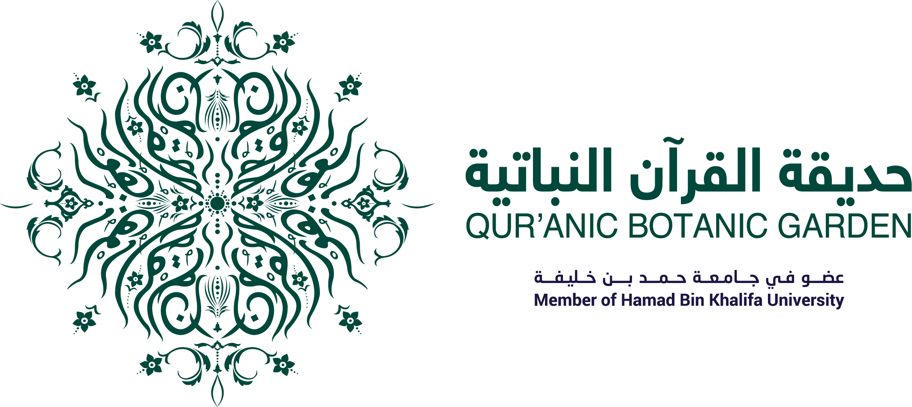
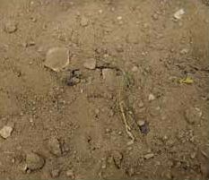
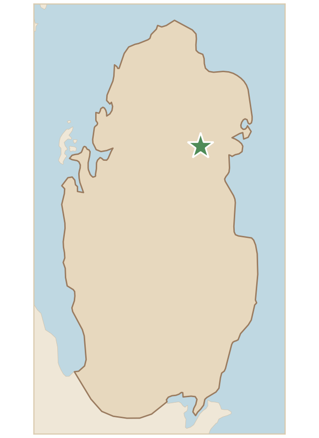

تربة تحتوي على حبيبات صغيرة ومتوسطة الحجم مع بعض القطع الصخرية، ولونها بني فاتح، مما يشير إلى تربة طينية مختلطة بالرمل، ويشير أيضًا إلى تربة متماسكة نسبيًا تحتوي على بعض المواد العضوية. وقد جُمعت تلك التربة من مزرعة مستصلحة.
Soil containing small and medium-sized grains with some rock pieces, light brown, which indicates a clay soil mixed with sand, and also a relatively cohesive soil containing some organic matter. This soil was collected from a reclaimed farm.